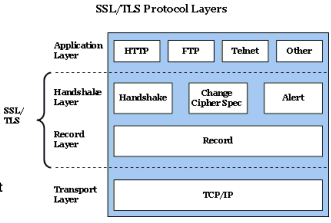
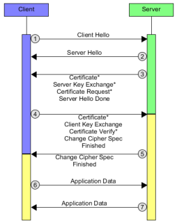
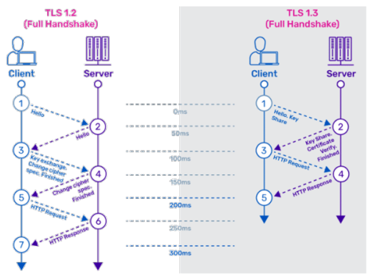

SSL and TLS
SSL, Secure Sockets Layer, developed as a way to secure communications between the client and server on the web (1990s by Netscape). The currently version is SSLv3, others are deprecated.
TLS, Transport Layer Security, has same protocol design to SSL but with different algorithms. The primary goal of TLS is to provide privacy and data integrity between two communication applications, nowadays used to protect information transmitted between browsers and Web Servers. The currently version is TLS 1.3.
A field in which SSL & TLS is HTTPS. It provides:
- authentication of the website and associated web server with which one is communicating
- protection against man-in-the-middle-attack
- bidirectional encryption of communications between a client and server
- protection against eavesdropping and tampering with the contents of the communication
Architectures
The most used architecture in which TLS is used is client-server, there are multiple clients that communicate with a single server. In this case Transmission Control Protocol (TCP) is used in order to establish a two-way connection between a server and a single client; it provides reliable byte stream transmission of data with error checking and correction, and message acknowledgement.
TLS is composed by two main protocols:
- handshake protocol → use public-key cryptography to establish a shared secret key between the client and the server;
- record protocol → use the secret key established in the handshake protocol to protect communication between the client and the server.

There are also some additional protocols:
- TLS change cipher protocol → used to change the encryption being used by the client and the server. Normally used as part of the handshake process to switch to symmetric key encryption;
- TLS alert protocol → used to report cause of failure.
Handshake

- Client send Hello message containing:
- version of the protocol
- list of supported cipher suite1
- Server send Hello message containing:
- chosen protocol
- chosen cipher suite
- session ID
- Server send three messages (during this phase RSA or DH are used and TLS verifies server’s digital certificate):
- certificate in X.509 standard (if client request it)
- server key exchange, used to generate the master key
- certificate request (if server requires the client to be authenticated)
- Client send three messages (during this phase RSA or DH are used and TLS verifies client’s digital certificate):
- certificate in X.509 standard (if server send a certificate request)
- client key exchange (same as above)
- certificate verify, message that provides explicit verification of the client certificate
- Server and client send two messages (server before client):
- change cipher spec
- hash of the entire handshake process
- message from client is now encrypted
- message from server is now encrypted
TLS authentication
There are two authentication:
- server-side → client uses the server’s public key to encrypt the data that is used to compute the secret key. The server can generate the secret key only if it can decrypt that data with the correct private key.
- client-side → server uses the public key in the client certificate to decrypt the data the client sends during step 4 of the handshake process. The exchange of finished messages that are encrypted with the secret key confirms that authentication is complete.
In order to verify the certification during step 3 and 4 TLS verifies:
- digital signature
- certificate chain checking intermediate CA certificates
- expiry, activation dates and the validity period
- revocation status of the certificate
TLS confidentiality
TLS is based on asymmetric key for exchange operation in which the symmetric key and the symmetric algorithm is chosen. For this reason there is not the possibility to break the confidentiality.
TLS integrity
TLS provides data integrity by calculating a message digest. For this stage hash algorithm is used.
TLS vulnerabilities
There are some vulnerabilities dues to backward compatibility and logical flaws. Three attacks on TLS are listed:
- POODLE → based on a man-in-the-middle attack in which the hacker tells to the client he doesn’t support TLS. At this point client propose SSL 3.0 and hacker forward message to the server that write back to the client “yes”. Now hacker can use a SSL 3.0 vulnerability.
- CRIME → manipulation of cookies in order to get some content from them.
- HEARTBLEED → the client sends a heartbeat to the server with a payload that contain data and the size of data. Server responds with the same heartbeat request. If client sends an heartbeat with wrong size server responds filling the empty space with random data from server memory and it can contain credentials, sensitive information, etc.
TLS 1.3
TLS 1.3 was born to remove some unsafe and unused features from previous version. It also improve security and performance maintaining a backward compatibility.
Faster handshake

Cipher suites
Cipher suites was reduced from 319 to 5. It was also removed the possibility to perform “renegotiation”. Renegotiation consist in a new exchange of parameters and keys for communication.
Forward secrecy
Forward secrecy is a feature of specific key agreement protocols that ensure session keys will not be compromised even if long-term secrets used in the session key exchange are compromised. This is possibile because:
- a new session key is generated every session a user initiates;
- zero round-trip-time modality which set RTT to zero during handshake that ensure better site performance;
- adoption of ephemeral Diffie-Hellman over RSA for keys exchange. An extension of the Diffie-Hellman method that uses different key for each connection2.
A cipher suite is a set of algorithms that help secure a network connection that uses TLS. It includes key exchange algorithm, bulk encryption algorithm and a message authentication code (MAC) algorithm. It can also include signatures and an authentication algorithm to help authenticate the server or the client.
↩︎Ephemeral Diffie-Hellman differs from the standard (static) DH because standard one use always the same private keys. For this reason the shared secret key is always the same. Ephemeral generates new key for every connection and thus the same key is never used twice. Mainly for this reason authentication can’t be provided by Ephemeral DH, another mechanism must be used: TLS server signs the content of its server key exchange message that contains the ephemeral public key.
↩︎